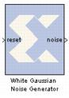

|
|
The The Xilinx White Gaussian Noise Generator (WGNG) generates white Gaussian noise using a combination of the Box-Muller algorithm and the Central Limit Theorem following the general approach described in [1] (reference listed below).The Box-Muller algorithm generates a unit normal random variable via a transformation of two independent random variables that are uniformly distributed over [0,1]. This is accomplished by storing Box-Muller function values in ROMs and addressing them with uniform random variables.The uniform random variables are produced by multiple-bit leap-forward LFSRs. A standard LFSR generates one output per clock cycle. K-bit leap-forward LFSRs are able to generate k outputs in a single cycle. For example, a 4-bit leap-forward LFSR outputs a discrete uniform random variable between 0 and 15. A portion of the 48-bit block parameter seed initializes each LFSR allowing customization. The outputs of four parallel Box-Muller subsystems are averaged to obtain a probability density function (PDF) that is Gaussian to within 0.2% out to 4.8sigma. The overall latency of the WGNG is 10 clock cycles. The output port noise is a 12 bit signed number with 7 bits after the binary point.